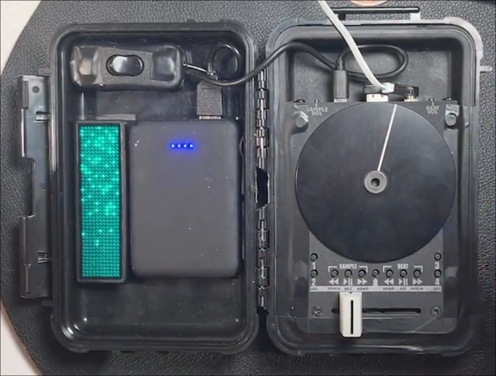
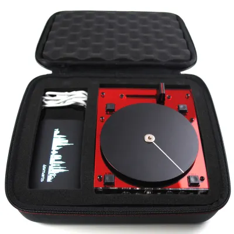
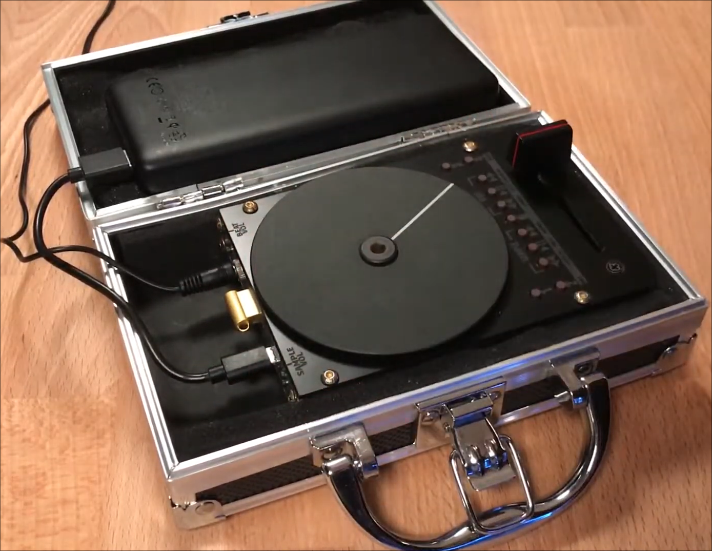
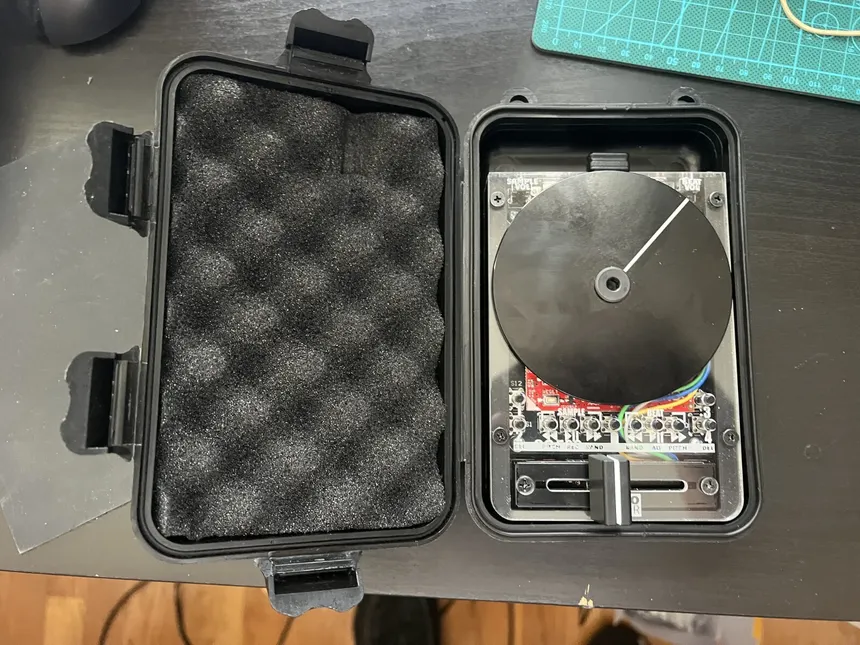

[WIP] The alias under which I will be sharing turntablism content in the future, using my (soon-to-arrive) portable and half-DIY gear.
Why half-DIY?
Long story short, I got
this
SC500 from portablismgear, instead of assembling one
myself. I foresaw a couple of advantages in doing so, hence the
pragmatism.
But I need more. Specifically:
- Peli 1040 Micro Case (black)
- Powerbank
- Velcro Cable Ties
- USB-C to 3.5mm Cable (black)
- USB-A to USB-C Manhattan Coiled Charging Cable (black)
- 2 SanDisk Ultra Fit USB 3.2 Flash Drives (64Gb)
- (more to come)
The goal is to have a portable workstation for comfortable sofa and outdoor sessions alike. I plan to acquire a Dirtywave M8 and fit it into the build somehow.
Inspiration




P.S.: This may be moved to a new site devoted entirely to turntablism or general music production with portable gear.